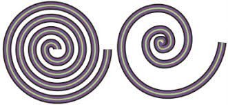

La herramienta Selección le permite seleccionar, inclinar y girar objetos, así como cambiar su tamaño.
Dibujos a mano alzada
La herramienta Mano alzada le permite controlar la suavidad de la línea curva que está dibujando, así como añadir segmentos a una línea existente.
A su vez, la herramienta Polilínea es la más adecuada para dibujar rápidamente una línea compleja que conste de segmentos curvos y rectos.
Transformación libre
Puede acceder a la barra de herramientas Transformar haciendo clic en Ventana Barras de herramientas Transformar.
Cada uno de estos métodos le permite aplicar transformaciones a un solo objeto o a varios objetos simultáneamente.
Todas las transformaciones se pueden borrar simultáneamente en cualquier momento.
herramienta Difuminar
En la caja de herramientas, haga clic en la herramienta Difuminar.
Para difuminar el exterior de un objeto, haga clic fuera de él (cerca del borde) y arrastre hacia fuera.
Para difuminar el interior de un objeto, haga clic dentro de él (cerca del borde) y arrastre hacia dentro.
herramienta Espiral
Haz clic en la página de dibujo y sin soltar arrastra el ratón hasta crear una espiral de la forma deseada.
Si deseas que quede proporcional, presiona la tecla Ctrl y sin soltarla, dibuja la espiral.
Para crear un espiral logarítmica, selecciona la herramienta Espiral.

herramienta recortar
La herramienta Recortar se encuentra en la caja de herramientas, en el menú lateral Recortar.
Para recortar objetos, defina un área rectangular (área de recorte) que desea conservar.
Se quitarán las partes del gráfico situadas fuera del área de recorte.
herramienta linea de 2 puntos
Las herramientas Bézier y Pluma le permiten dibujar líneas segmento a segmento, colocando cada nodo con precisión y controlando la forma de cada segmento curvo.
Si utiliza la herramienta Pluma, puede previsualizar los segmentos de la línea que está dibujando.
herramienta Medios artísticos
Puedes seleccionar entre 5 tipos diferentes de medios artísticos: Preestablecido , Pincel , Diseminador , Pluma Caligráfica y Presión .
El medio artístico Preestablecido te permite seleccionar entre distintos tipos de trazos, los cuales puedes rellenar con color.
herramienta Dibujos inteligente
Puede utilizar la herramienta Dibujo inteligente para dibujar trazos a mano alzada que pueden reconocerse y convertirse en formas básicas.
Puede establecer el nivel al que CorelDRAW reconoce formas y las convierte en objetos.
Puede asimismo especificar el grado de suavidad que se le aplica a las curvas.
herramienta Curva de 3 puntos
La herramienta Curva de 3 puntos permite dibujar líneas curvas sencillas especificando su anchura y altura.
Esta herramienta se utiliza para crear formas en arco rápidamente, sin tener que manipular nodos.